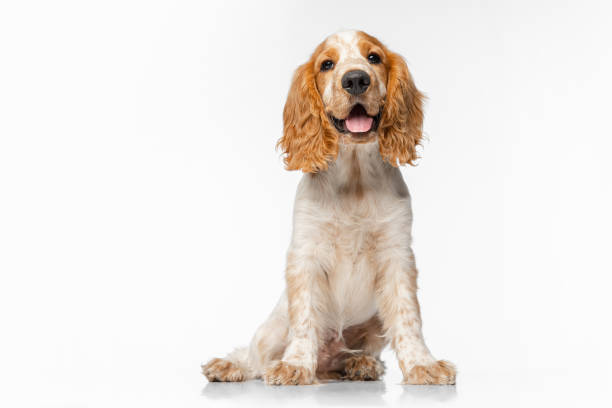

Pagina Principal
Pagina Principal
 Sección Gatos
Sección Gatos
PERROS EN ADOPCIÓN
¡Hola! Me alegra saber que estás interesado en encontrar un hogar amoroso para Jack. Él también es un perro de tamaño mediano con un pelaje marrón y blanco. Jack es muy amigable y le encanta estar con las personas, especialmente si pueden jugar con él. Es un perro muy activo y necesita hacer ejercicio diariamente para mantenerse en forma y saludable. Jack también está completamente vacunado y esterilizado, lo que significa que está listo para ir a su nuevo hogar de inmediato. Si estás buscando un compañero leal y divertido, Jack podría ser el perro adecuado para ti. Si estás listo para darle a Jack un hogar para siempre, ¡considera adoptarlo hoy mismo!
Nuestro Perro que busca familia:
|  |
|
 Volver
Volver